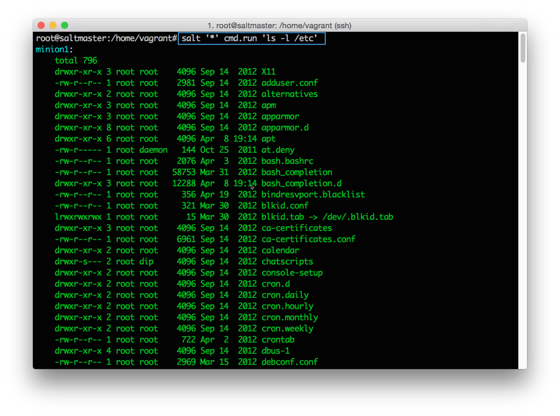

Execute Commands
You'll learn how to:
- Remotely execute shell commands on managed systems
- Remotely execute Salt execution modules on managed systems
Estimated time: 5 minutes
Difficulty:
After you install SaltStack, you are immediately ready to run shell commands, update packages, and distribute files to all managed systems simultaneously. As a bonus, all responses are returned in a consistent, configurable format so you can easily see what did and didn’t work.
10 minutes to measurable productivity? Not bad.
Run a Shell Command
Salt lets you remotely run shell commands across multiple systems using cmd.run:
salt '*' cmd.run 'ls -l /etc'
All managed systems simultaneously and immediately execute this command and then return the output to the Salt Master. Feeling the power?
Salt Execution Modules
While shelling out using cmd.run is certainly useful, the real power comes when you add Salt execution modules. The Salt community has put tremendous effort into creating hundreds of execution modules that simplify most management tasks. Even better, the same command can be used consistently across all supported platforms.
Resist the urge to shell out. Learn the ways of the Salt execution modules.
Show Disk Usage
salt '*' disk.usage

Install a Package
salt '*' pkg.install cowsay

List network interfaces
salt '*' network.interfaces

These are just a few examples of the many execution modules available.
But who runs commands on all of their systems?
Good question! In the next section, we'll introduce the powerful targeting mechanism that lets you run commands on specific groups of systems.